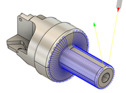

Limites angulaires
Sélection des points de départ et d'arrivée
Parcours de ligne avec limites angulaires
Contrôle la zone de limitation angulaire d'une trajectoire d'outil. Les limites angulaires peuvent être appliquées aux trajectoires d'outil circulaires et de style de ligne uniquement.
Spécifiez une valeur À partir du point pour définir l'emplacement à partir duquel les passes d'usinage commencent, puis utilisez l'option Mode Point de fin pour contrôler l'emplacement auquel les passes d'usinage doivent se terminer.
|
 |
Limites angulaires |
Parcours de ligne avec limites angulaires |